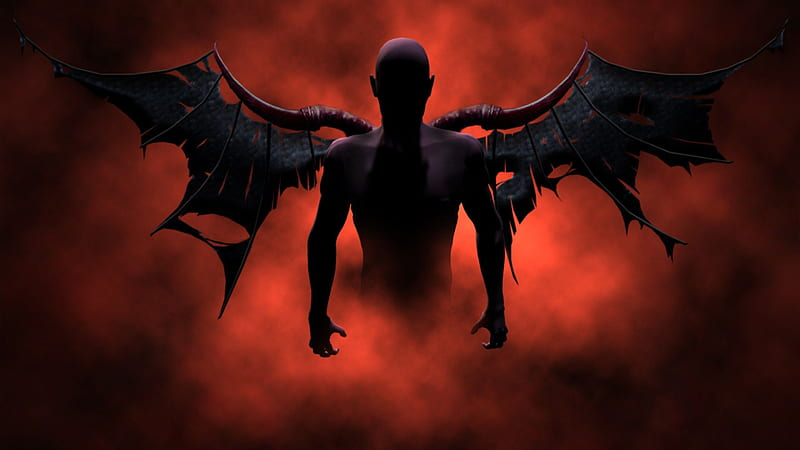
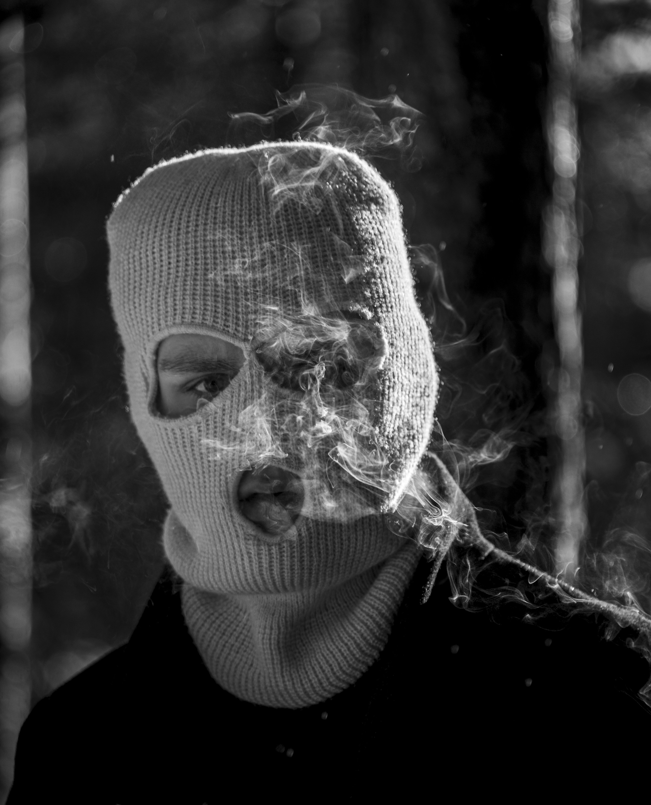

Gallery



Real Name: Unknown
Age:Unknown
Origin: Despite being just a Teen/Adult, Nightsmokes hails from Lagos/Chicago(this is not well known to us ), Nigeria/U.S.A . Known for his anonymity, Nightsmokes blends traditional Nigerian sounds with modern American rap influences, creating a unique and compelling music style.
Early Life: Growing up in Lagos, Nightsmokes was immersed in a vibrant musical culture. From a young age, he was fascinated by American rap and hip-hop, which significantly influenced his sound. Even though his true identity remains a mystery, his music speaks volumes. His choice to remain faceless adds an element of intrigue, allowing his talent to shine through without the distraction of fame.
Career: Nightsmokes emerged onto the music scene with a fresh, innovative approach that bridges the gap between Nigerian rhythms and American rap. His hidden identity only enhances the mystique surrounding his music, making each release an exciting event for his growing fanbase.He uses face mask covers for his picture. He was inspired by late Juice Wrld and some Nigeria musicians like Burna boy and Rema. Some of his singles are Eye for Eye, Love Again and more

He is on Audiomack Nightsmokes he have released some songs on audiomack and more. What are you waiting for let discover this next musician